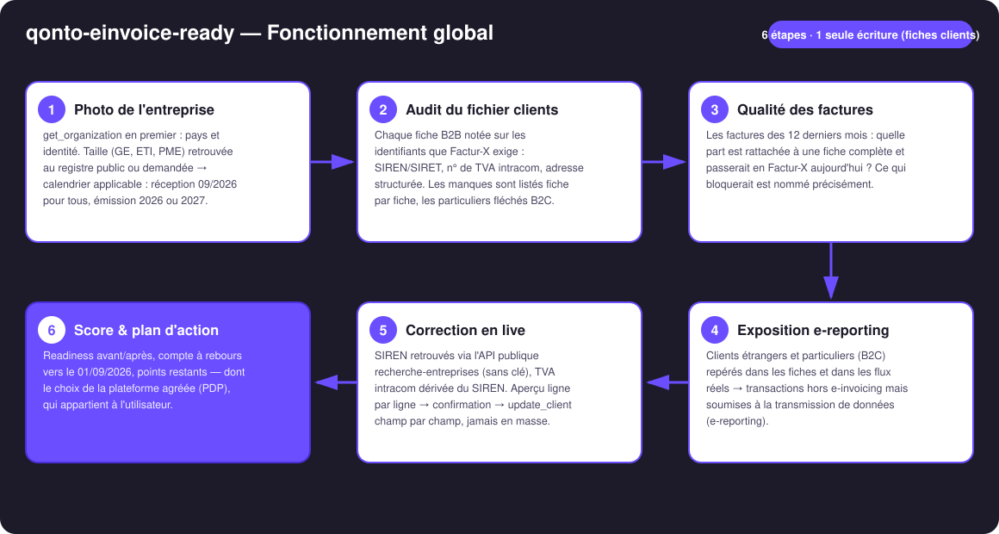
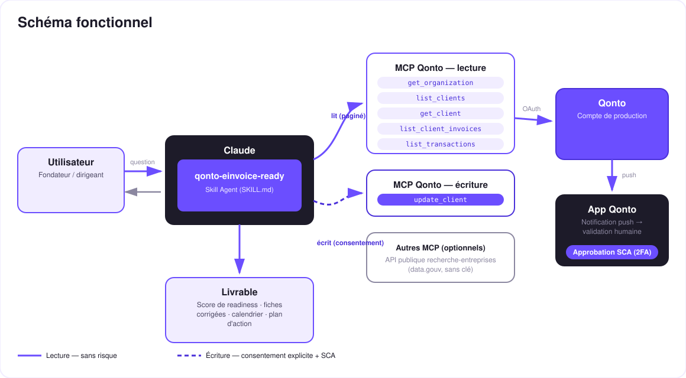

Prêt pour la facturation électronique du 1er septembre 2026 ? L'audit qui mesure l'écart — puis le comble, fiche par fiche.
Le 1er septembre 2026, toutes les entreprises françaises assujetties à la TVA devront pouvoir recevoir des factures électroniques (émission : 2026 pour les GE/ETI, 2027 pour les PME/TPE). Le piège n'est pas la date — c'est le fichier clients : sans SIREN, sans TVA intracom, sans adresse structurée, pas de Factur-X valide. Le skill transforme le compte Qonto en check-up de préparation :
Fichier clients complet pour Factur-X, qualité des factures émises, calendrier connu, e-reporting cartographié — formule transparente, avant/après.
Taille de l'entreprise retrouvée au registre public (GE/ETI/PME) ou demandée, jamais devinée → ta date d'émission, 2026 ou 2027.
Clients étrangers et B2C repérés dans les fiches ET dans les flux réels : hors e-invoicing, mais données à transmettre.
SIREN retrouvés via l'API publique recherche-entreprises (sans clé), aperçu ligne par ligne → update_client après ta confirmation.
| Prérequis | Détail | Obligatoire |
|---|---|---|
| Compte Qonto production | Le skill s'adapte à toute organisation — get_organization d'abord, zéro donnée en dur | ✅ |
| Pays | Réforme française. Autres pays Qonto (DE, ES, IT…) : audit générique de complétude du fichier clients, jamais de calendrier inventé | ℹ️ détecté |
| MCP Qonto connecté | Connecteur officiel (claude.ai / Claude Desktop), login OAuth | ✅ |
| Des fiches clients dans Qonto | La matière première de l'audit ; sans clients, le skill explique le référentiel et s'arrête là | ⭕ |
| API registre public joignable | recherche-entreprises.api.gouv.fr — sans clé ; si indisponible, l'audit tourne, seule la correction en live attend | ⭕ |
| Taille de l'entreprise | Retrouvée au registre (categorie_entreprise) ou demandée — fixe ta date d'émission | ℹ️ détecté |

get_organization toujours en premier (list_transactions exige bank_account_id/iban)
Une écriture qui ne touche jamais à l'argent : la lecture est sans risque ; l'écriture est update_client — fiches clients uniquement. Aperçu complet (actuel → proposé, avec la source), confirmation explicite dans la conversation, écriture champ par champ. Jamais de mise à jour en masse silencieuse.
| Date | Obligation | Qui |
|---|---|---|
| 01/09/2026 | Recevoir des factures électroniques | Toutes les entreprises françaises assujetties à la TVA |
| 01/09/2026 | Émettre en électronique | Grandes entreprises & ETI |
| 01/09/2027 | Émettre en électronique | PME, TPE, micro-entreprises |
| Aligné sur l'émission | E-reporting (B2C + transactions internationales) | Tous, selon leur date d'émission |
| Étape | Ce qui se passe |
|---|---|
| Recherche | recherche-entreprises.api.gouv.fr par nom + code postal — API publique data.gouv, sans clé |
| Homonymes | Plusieurs candidats plausibles → nom, ville, SIREN affichés, le skill demande |
| TVA intracom | Dérivée du SIREN — toujours marquée « dérivée, à confirmer » |
| Aperçu | Un tableau unique : fiche · champ · valeur actuelle → proposée · source (registre / dérivé / utilisateur) |
| Écriture | Après confirmation explicite : update_client champ par champ, résultat annoncé honnêtement |
Exemple (fictif, chiffres inventés) : « Readiness : 62 %. 9 de tes 14 clients n'ont pas de SIRET — j'en ai retrouvé 7 au registre national. Aperçu ligne par ligne, tu confirmes ? » → après écriture : 91 %.
| Sortie | Format | Quand |
|---|---|---|
| Réponse dans la conversation | Tableaux markdown : score détaillé, fiches incomplètes, calendrier, exposition e-reporting | Toujours — c'est la base |
| Aperçu de correction | Tableau fiche · champ · actuel → proposé · source, soumis à confirmation | À chaque correction proposée |
| Rapport de readiness | Fichier/artifact HTML : jauge avant/après, compte à rebours, plan d'action | Si l'hôte affiche les fichiers ; repli automatique sur les tableaux sinon |
La démo ≤ 3 min jointe à la PR suit le storyboard : le mur du 01/09/2026 → audit et score → correction en live (registre public → aperçu → confirmation) → score après / plan d'action. Le script détaillé de tournage est conservé en interne (hors dépôt).
| Idée | Effort | Note |
|---|---|---|
| Vérification périodique (« re-scanne mon fichier clients chaque mois ») | Faible | Le score se dégrade à chaque nouveau client incomplet |
| Contrôle de validité des n° de TVA européens (VIES) | Moyen | Même logique « API publique sans clé » |
| Extension fournisseurs : audit des fiches côté achats | Moyen | Réutilise le moteur de scoring tel quel |
| Modules pays (DE XRechnung · IT SdI · ES Verifactu…) | Moyen | Qonto est paneuropéen ; v1 = France + détection du pays |
Duo naturel avec qonto-vat-return et qonto-meeting-invoice | — | La réforme alimente la TVA ; des factures propres dès le premier jour |
update_client : aperçu complet + confirmation explicite, champ par champ, jamais en masse silencieux ; échec annoncé, jamais présenté comme réussi